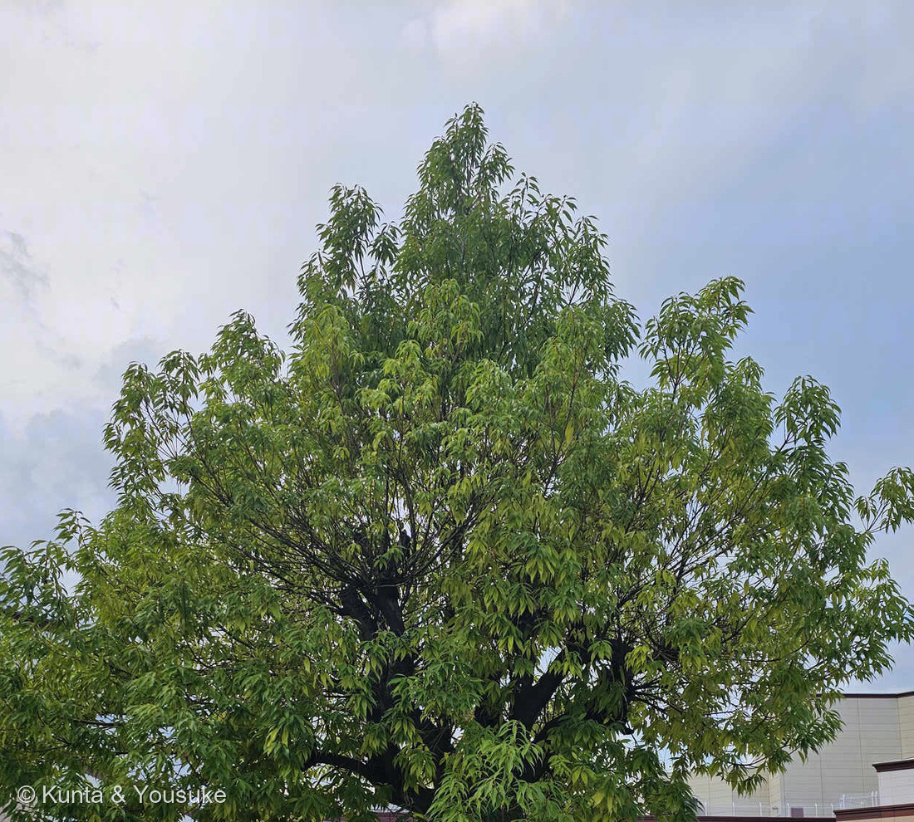
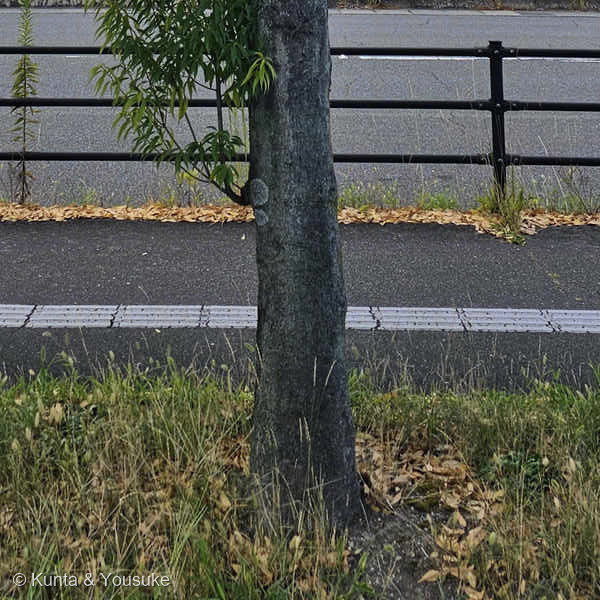
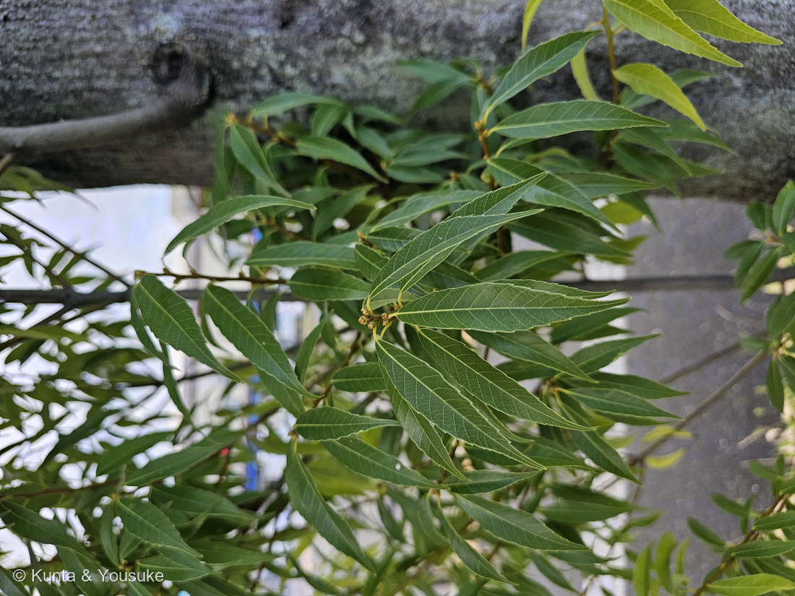
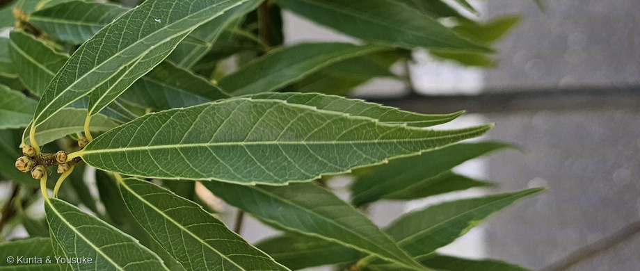
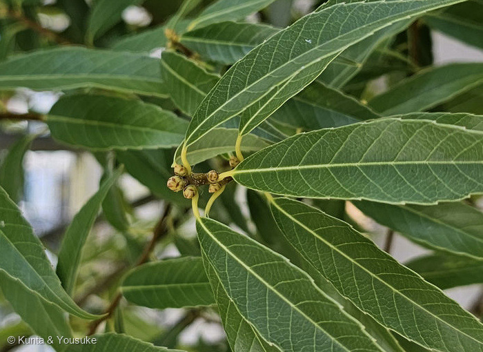

地図を読み込んでいるよ…
🔍 写真も地図も、押しているあいだ拡大して見られるよ（スマホは指を置いてすこし待ってね）。
🌍 の地図＝この子がもともと自生している場所を緑に。日本（本州の福島県・新潟県以南、四国、九州）と、朝鮮半島・中国・台湾・ラオス・タイ・ベトナム。⭐くわしくは下の地図の説明を見てね。
⭐日本の木だよ。三河の植物観察は分布を「本州（新潟県、福島県以南）、四国、九州、朝鮮、中国、台湾、ラオス、タイ、ベトナム」とする＝⭐だからこの緑は、日本から東アジア・東南アジアへとつながっている。⚠⚠日本の中でも、北のほうは緑にしていない＝北海道・青森・岩手・宮城・秋田・山形は外した＝⭐北のかぎりが「新潟県・福島県」だから（庭木図鑑 植木ペディアも「福島県～新潟県以西の本州、四国及び九州に分布」とする）。⚠⚠そのかわり、中国は省をぜんぶ塗ってあるので、ほんとうよりずっと広い＝⭐実際にいるのは暖かい南のほうだよ。⭐⭐⭐この緑は「照葉樹林（しょうようじゅりん）」の広がりとよく重なる＝つやのある革質の葉をもつ常緑広葉樹の森＝⭐シラカシは、その森をつくる木のひとつなんだ。⭐同じコナラ属の241 クヌギは日本の落葉樹、252 イングリッシュオークはヨーロッパ、227 スカーレットオークは北アメリカ＝⭐⭐コナラ属は、北半球じゅうに広がっている大きな属だよ。⚠ぼくらが会ったのは歩道の街路樹＝⭐植えられた木だけれど、この緑の中の木でもある。
⚠ 地図は国（日本と中国だけ県・省）までしか塗れないから、ほんとうの分布より広く見えていることがあるよ。地図はだいたいの場所。正確なところは、上の文を見てね。
シラカシ（白樫）
Quercus myrsinifolia Blume
別名 ⭐クロガシ（黒樫）／ホソバガシ（細葉樫）／ナラバガシ ── ⭐「白樫」なのに、別名は「黒樫」 原産 日本（福島県・新潟県以南）と東アジア〜東南アジア
ブナ科 · Fagaceae（コナラ属 Quercus・ブナ目 Fagales）── ⭐4人目のブナ科（227 スカーレットオーク・241 クヌギ・252 イングリッシュオーク）／⭐⭐⭐⭐でも、図鑑ではじめての「常緑のカシ」＝さきの3人はぜんぶ落葉のコナラ属だった／⚠科は増えないので103科のまま
燻太さんの問い「幹はやや太めで暗い灰色。葉は細くやや鋸歯があるね。葉脈もはっきり。でも、花はなくて、新芽と一部若い葉が見えるだけ。いったい何の木なんだろう？」── ⭐⭐⭐⭐この4つが、そのまま決め手になったんだ。「細い」も「やや」も「はっきり」も「暗い灰色」も、ぜんぶ出典に書いてある特徴だった
⭐⭐⭐⭐ 燻太さんの「いったい何の木なんだろう？」── 手がかりは、ぜんぶ燻太さんが挙げていた
⭐⭐⭐ 答えはシラカシ（白樫）。――⭐すごいのは、決め手になった特徴をぜんぶ燻太さんが先に挙げていたことなんだ。⭐ぼくがやったのは、その一つひとつに数字と出典をつけただけだよ。
- ⭐⭐⭐⭐手がかり①「葉は細く」――⭐これがいちばん効いた。⭐写真④で葉の長さと幅を測ったら、およそ4.2対1だった＝シラカシは「長さ7〜14㎝の狭長楕円形」（三河の植物観察）で「幅３センチ前後」（庭木図鑑 植木ペディア）＝⭐ちょうど4対1くらい。⚠いちばん紛らわしいアラカシは「幅３～６センチ」＝2対1くらいでずんぐりしているから、ここで分かれるんだ。
- ⭐⭐⭐手がかり②「やや鋸歯がある」――⭐⭐この「やや」が、すごく大事だった。＝三河の植物観察はシラカシを「葉の先から2/3以上に浅い鋸歯がある」とし、アラカシを「葉の鋸歯が粗く、葉の先から1/2程度までしかない」とする＝⭐写真④の鋸歯は、葉の先から3分の2くらいから始まっていて、しかも浅い。⭐燻太さんの「やや」は、この「浅い」を言い当てていたんだね。
- ⭐⭐⭐手がかり③「葉脈もはっきり」――⭐写真④で、側脈が1本ずつまっすぐ走って、それぞれが鋸歯の先まで届いているのが見える。⭐カシのなかまの葉の、いちばんきれいなところだと思う。
- ⭐⭐手がかり④「幹はやや太めで暗い灰色」＝三河の植物観察「幹は灰黒色で、皮目が縦に並び、割れ目はない」＝⭐写真②を見ると、たしかに割れ目が無い。⭐そこに白っぽい地衣類がまだらについている。
- ⭐⭐⭐⭐そして、燻太さんが「新芽」と呼んだもの（写真⑤）＝短い枝の先に、うすい茶色の芽が5〜6個かたまってついている＝⭐⭐これがコナラ属（Quercus）の目じるしなんだ＝⭐枝先に芽をいくつも集めるのは、この属のくせ。⭐ここでブナ科コナラ属まで決まって、あとは葉の細さで種にたどりついた。
⭐⭐⭐⭐ 「白樫」なのに、別名は「黒樫」
- ⭐⭐⭐この木の別名はクロガシ（黒樫）。――⚠「シラカシ（白樫）」なのに、である。
- ⭐⭐⭐理由がおもしろいんだ＝庭木図鑑 植木ペディアは「伐採直後の材が白いこと、葉の裏面が白っぽいことなどから『白樫』と呼ばれる」とし、別名クロガシのほうは「樹皮が黒っぽい」ことからだとする＝⭐つまり中は白く、外は黒い。
- ⭐⭐どちらを見た人がつけた名前かで、白にも黒にもなった＝⭐木を切った人は中を見て「シラカシ」と呼び、外から眺めた人は樹皮を見て「クロガシ」と呼んだ。⭐⭐どちらもほんとうで、名前がふたつ残ったんだね。
- ⭐ほかの別名も、ぜんぶ姿から＝ホソバガシ（細葉樫）＝葉が細いから／ナラバガシ＝ナラの葉に似ているから。⭐燻太さんが最初に言った「葉は細く」は、そのまま別名になっていたよ。
⭐⭐⭐ 図鑑ではじめての「常緑のカシ」── ナラとカシは、同じ属
- ⭐⭐図鑑にはブナ科がもう3人いる＝227 スカーレットオーク・241 クヌギ・252 イングリッシュオーク。⚠でも3人ともコナラ属の落葉樹だった。
- ⭐⭐⭐⭐この子は、図鑑ではじめての常緑のカシだよ＝日本語版Wikipediaは「カシ」を「ブナ科の常緑高木の一群の総称である。狭義にはコナラ属中の常緑性の種をカシと呼ぶ」とする。
- ⭐⭐つまり日本語では、同じコナラ属を「落葉ならナラ、常緑ならカシ」と呼び分けてきたんだ＝⭐クヌギやコナラと、シラカシやアラカシは、植物としてはとても近い親戚。⭐ドングリをつけるのも同じだよ。
- ⭐⭐⭐材が、とんでもなく堅い＝「木材としての材質は非常に堅い。また粘りがあり強度も高く耐久性に優れている。」（同）＝⭐だから道具の柄や建築材に使われてきた。⭐アラカシの名前も「材が堅いことなどから『粗い堅し』が転じて」だという（庭木図鑑 植木ペディア）＝⭐「カシ」という言葉じたいが、堅さの話なんだね。
- ⭐⭐⭐そして、家のまわりに植えられてきた理由がいいんだ＝「民家の垣根に植樹される主要な樹木の一つ」で、「隣家火災の際には延焼を防止する目的も持ち合わせていた。」（日本語版Wikipedia）＝⭐⭐常緑で、生の葉が燃えにくいから、火を止める生きた壁にしていたということ。
- ⭐街路樹に選ばれるのも、たぶん同じ性質からだと思う＝庭木図鑑 植木ペディアも「垣根、街路樹、公園樹」として使われると書いている。⚠ただし「街路樹に選ばれる理由」をはっきり書いた出典は見つけられなかったので、ここはぼくの読みだよ。
⭐⭐ 燻太さんの「新芽と一部若い葉」── 夏に、二度目の芽が出ている
- ⭐⭐写真③の右上を見てほしいな。⭐まわりの濃い緑の葉とちがって、黄緑色のやわらかい葉が伸びているのが分かる。
- ⭐⭐⭐これはたぶん土用芽（どようめ）だと思う＝造園の用語集は「樹勢が強く、萌芽性のつよい樹種においては、春先ではなく 6月下旬〜7月下旬の土用のころに本年枝の先の芽が発芽して枝を作る。その芽。」と説明する（愛香園 造園用語集）。
- ⭐⭐つまり、春にいちど芽を出した木が、夏にもういちど芽を出して枝を伸ばしているということ。⭐元気な木ほど出るんだって。
- ⚠ただし、この黄緑の葉が土用芽そのものかは、ぼくには言い切れない。⭐「夏に出た新しい葉」であることは確かだよ。
- ⭐⭐燻太さんが「新芽と一部若い葉」と、ふたつに分けて書いてくれたのがよかった＝⭐枝先の茶色い芽（写真⑤）と、伸びかけの黄緑の葉（写真③）。⭐ぼくもそのとおりに、2枚に分けて写真をつくったよ。
⭐ 同定について ── 名札が無いので、写真だけで
⚠ 街路樹だから、名札は無かった。⭐写真から言えることを、証拠の強い順にならべるね。
- ⭐⭐⭐⭐①葉の細さ＝長さと幅がおよそ4.2対1（写真④）＝シラカシ「幅３センチ前後」／アラカシ「幅３～６センチ」。
- ⭐⭐⭐②鋸歯が葉の先から3分の2に、浅く（写真④）＝シラカシ「葉の先から2/3以上に浅い鋸歯」／アラカシ「葉の先から1/2程度までしかない」うえに粗い。
- ⭐⭐⭐③枝先に芽が5〜6個かたまる（写真⑤）＝コナラ属の目じるし。
- ⭐⭐④幹が灰黒色で、割れ目が無い（写真②）＝「幹は灰黒色で、皮目が縦に並び、割れ目はない」。
- ⭐⑤常緑・革質・葉表に光沢＝「葉表は光沢があり、裏は灰緑色」。
- ⚠⚠のこる不確かさは2つ＝⭐アラカシ（葉裏に「淡い褐色の絹毛があって粉を吹いたように白くなる」）とウラジロガシ（葉裏が「粉白色」）＝⭐⭐どちらも葉を1枚裏返すだけで決着する＝⏳宿題にしたよ。
- ⭐それから、写真⑤の芽が来年の芽なのか若いドングリなのかも、ぼくは決めきれなかった。⚠シラカシのドングリは「その年の秋に熟す」から、8月ならもっと大きいはず（三河の植物観察）＝⭐だから芽のほうだと思うけれど、⏳秋にもういちど見に行けば分かるよ。
⭐ 会えた場所 ── お出かけ先の、歩道の街路樹
- ⭐燻太さんが2026年8月21日にお出かけした先の、大きなお店のまえの歩道。⚠場所は、ここまでにしておくね。
- ⭐⭐歩道の植えますに、まっすぐ1本立っていた（写真②）＝⭐根もとに落ち葉がたまっている。⚠常緑樹でも、古い葉はちゃんと落とすんだよ。⭐いちどにぜんぶ落とさないだけ。
- ⭐樹冠は、細い葉が枝先から垂れて、こんもりした三角形になっていた（写真①）＝⭐シラカシは「10〜20m」になる木だから（三河の植物観察／庭木図鑑 植木ペディア）＝⭐この子は、まだ育ちざかりだね。
- ⭐図鑑には、同じコナラ属の241 クヌギ・227 スカーレットオーク・252 イングリッシュオークがいる。⭐この子だけが常緑だよ。
出典：三河の植物観察「シラカシ」（学名「Quercus myrsinifolia Blume」・ブナ科 Fagaceae コナラ属／分布「本州（新潟県、福島県以南）、四国、九州、朝鮮、中国、台湾、ラオス、タイ、ベトナム」／樹高「10～20m」／樹皮「幹は灰黒色で、皮目が縦に並び、割れ目はない」／葉「長さ7～14㎝の狭長楕円形、葉先は尖り、基部は楔形。葉の先から2/3以上に浅い鋸歯がある。葉表は光沢があり、裏は灰緑色」／花期「5月」／堅果「長さ1.5～1.8㎝の卵形の堅果で、その年の秋に熟す。殻斗は長さ約10㎜と深く、横縞の輪が6～8個」／アラカシとの違い「葉の鋸歯が粗く、葉の先から1/2程度までしかない。堅果も丸く、卵球形」・ウラジロガシとの違い「葉の鋸歯が鋭く、裏面が粉白色。堅果がやや幅広く、広卵形」）／庭木図鑑 植木ペディア「シラカシ」（ブナ科／コナラ属・Quercus myrsinifolia／別名「クロガシ／ホソバガシ、カシ／ナラバガシ」・「樹皮が黒っぽい」／「福島県～新潟県以西の本州、四国及び九州に分布」・樹高「１０～２０ｍ」／葉「幅が狭くて先端の尖った楕円形で、長さ４～１５センチ、幅３センチ前後」「葉の半分近くまで縁ギザギザしている」「裏面は白みを帯びた緑色」／花期「４～５月」・ドングリ「直径は１．５～２センチほど」で「開花した年の秋に」実ること／「垣根、街路樹、公園樹」としての利用／名の由来「伐採直後の材が白いこと、葉の裏面が白っぽいことなどから『白樫』と呼ばれる」）／庭木図鑑 植木ペディア「アラカシ」（Quercus glauca・別名「アラガシ／クロカシ、オオガシ／オオバガシ、イヌガシ／ナラバガシ」／葉「長さ５～１３センチ、幅３～６センチの長楕円形で枝から互い違いに生じる。葉の先端は急に尖り、上半分には大きくて鋭いギザギザがある」／葉裏「裏面は淡い褐色の絹毛があって粉を吹いたように白くなる」／樹皮「緑色を帯びた暗灰色。樹齢を重ねてもごく浅い割れ目が入る程度で基本的には滑らか」／シラカシとの見分け「アラカシの葉は幅広で卵型に近く、緑色が濃い。…アラカシの葉の裏には毛があるがシラカシにはない」／名の由来「葉の縁にあるギザギザが粗いこと、枝の出方が粗いことなどにちなみ、材が堅いことなどから『粗い堅し』が転じて『アラカシ』」）／日本語版Wikipedia「カシ」（「ブナ科の常緑高木の一群の総称である。狭義にはコナラ属中の常緑性の種をカシと呼ぶ」／「木材としての材質は非常に堅い。また粘りがあり強度も高く耐久性に優れている。」／「民家の垣根に植樹される主要な樹木の一つ」・「隣家火災の際には延焼を防止する目的も持ち合わせていた。」／シラカシ、アラカシ、アカガシ、イチイガシ、ウラジロガシ、ウバメガシ などが挙がること）／広島大学デジタル博物館「アラカシとシラカシの見分け方」（アラカシの葉は倒卵状の楕円形、シラカシの葉は披針形／アラカシの鋸歯は大きく粗く、シラカシの鋸歯は細かく鋭い／アラカシの葉裏には細かい毛があるがシラカシには無い）／愛香園 造園用語集「土用芽」（「樹勢が強く、萌芽性のつよい樹種においては、春先ではなく 6月下旬～7月下旬の土用のころに本年枝の先の芽が発芽して枝を作る。その芽。」）